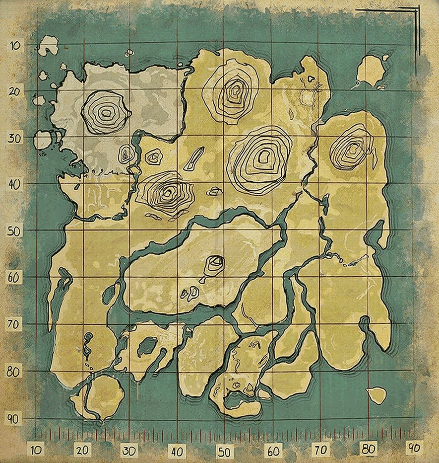
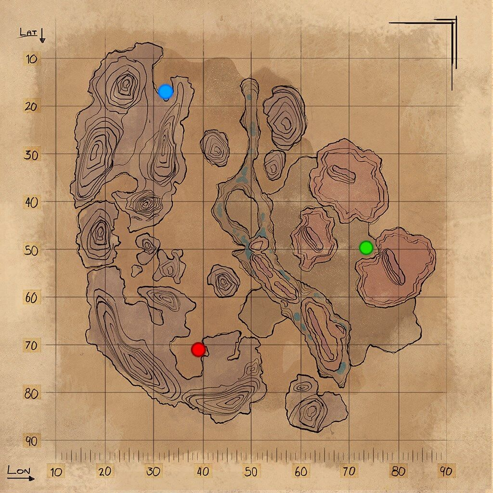
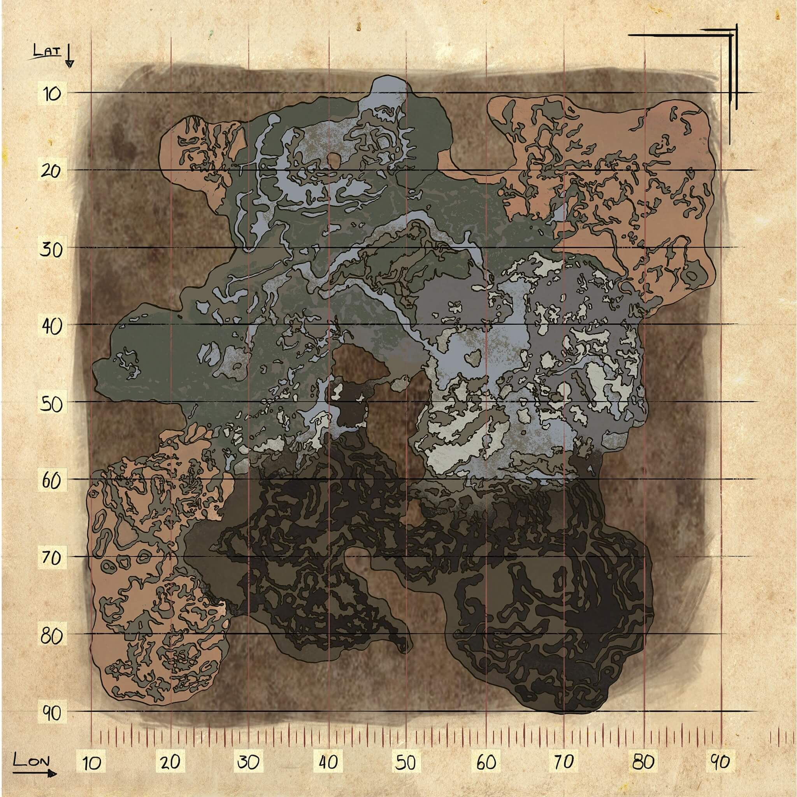
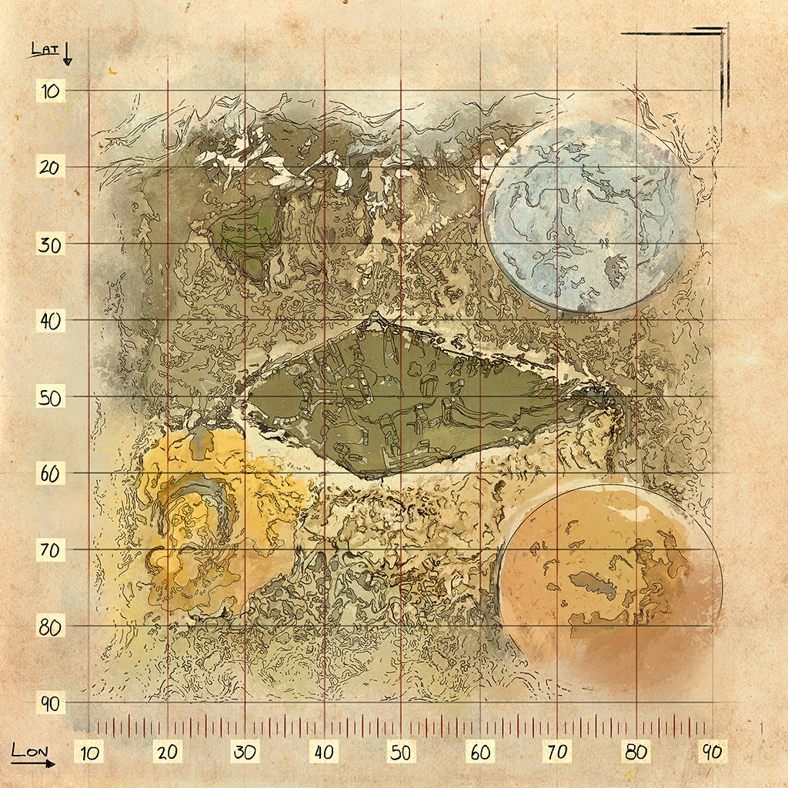
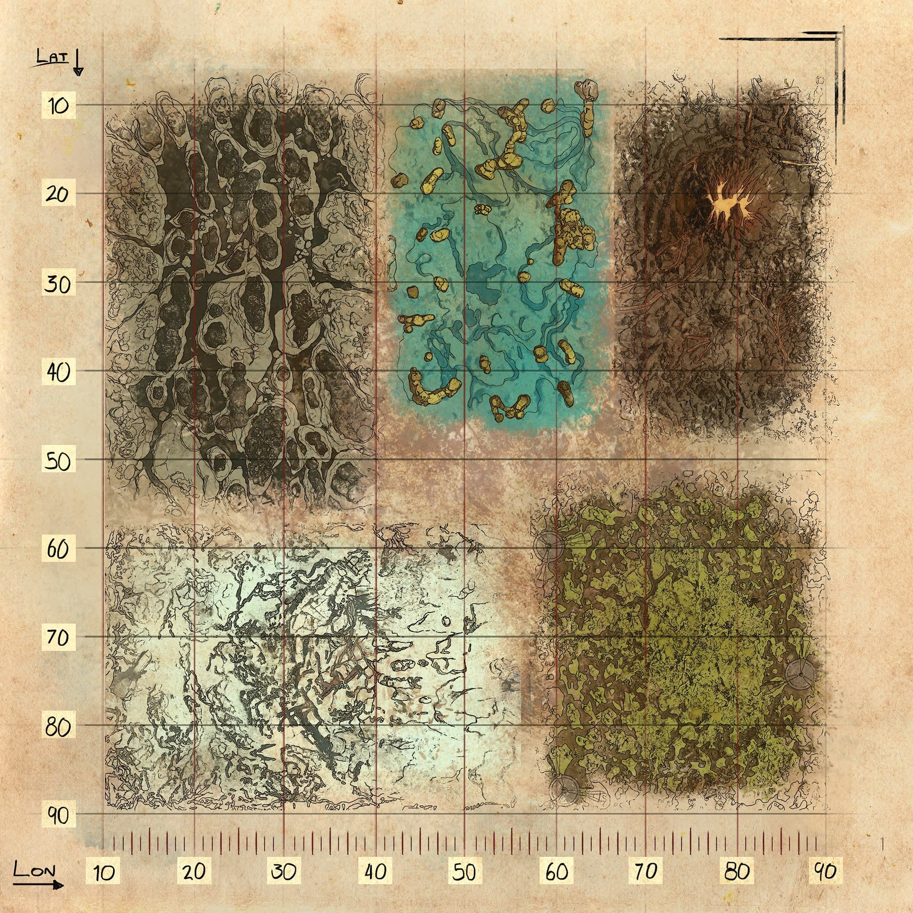
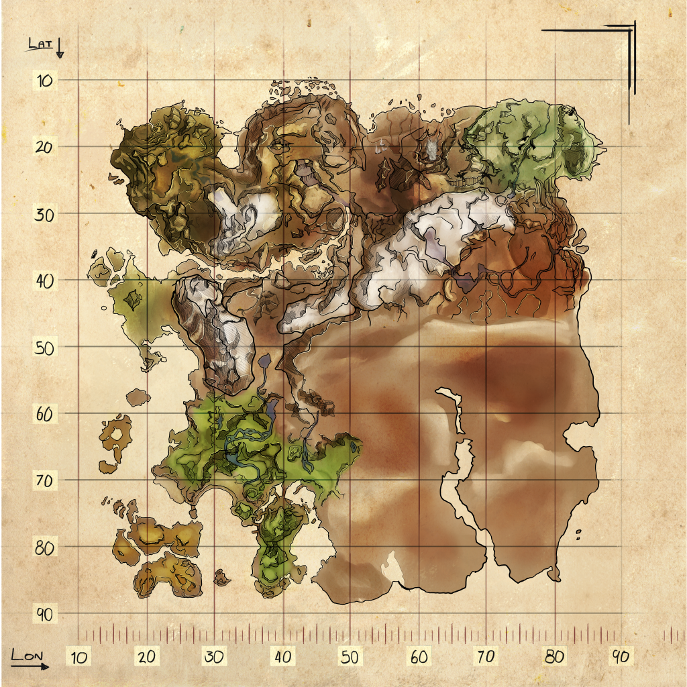

Ark Survival Evolved es un videojuego de acción-aventura y supervivencia desarrollado por Studio Wildcard, Instinct Games, Efecto Studio y Virtual Basement. Lanzado oficialmente el 29 de agosto de 2017 para Windows, Xbox One, Nintendo Switch, PlayStation 4, Android y IOS. El acceso adelantado al juego comenzó para Windows el 2 de junio de 2015, para OS X y Linux el 1 de julio de 2015, y el programa Game Preview en Xbox One el 16 de diciembre de 2015. Los desarrolladores han confirmado que el juego será 100% compatible con PlayStation VR,1 el dispositivo de realidad virtual de PlayStation. En el juego, los jugadores deben sobrevivir en un mundo lleno de dinosaurios y otros animales prehistóricos que deambulan por el mapa, peligros naturales y otros jugadores potencialmente hostiles. En él existen variedades de frutas, verduras y alimentos los cuales servirán de ayuda para la supervivencia o en su defecto para el contraataque. El juego se puede jugar en primera o tercera persona. El mundo se puede recorrer a pie, navegando en barca o montando un dinosaurio. Los jugadores pueden usar armas de fuego o armas improvisadas en contra de los humanos y criaturas hostiles, con la posibilidad de construir bases para defenderse. Los jugadores también pueden personalizar las armas utilizando objetos obtenidos del entorno. El juego dispone de modo de un jugador y multijugador. Este último permite a los jugadores participar en el juego simultáneamente.
Todos los mapas que hay en ARK
TheIsland
Scorched earth
Aberration
Extintion
Genesis
Ragnarock
TheCenter